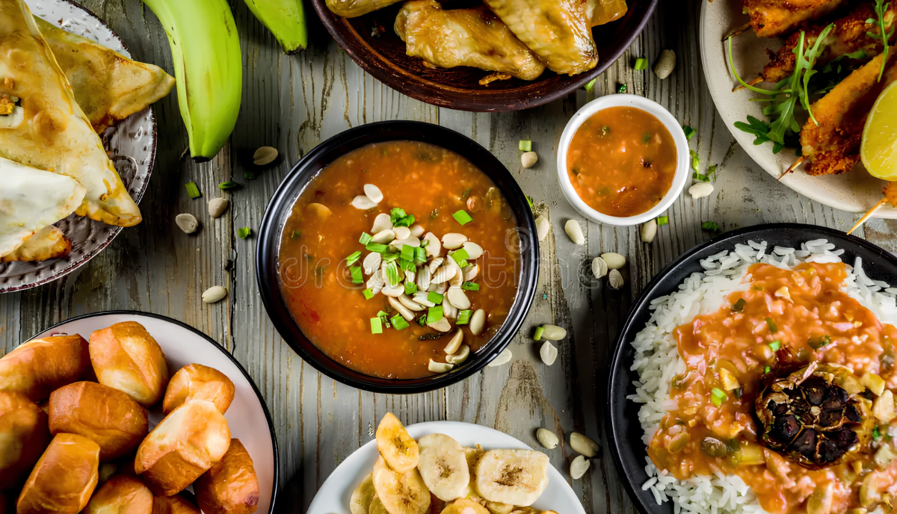
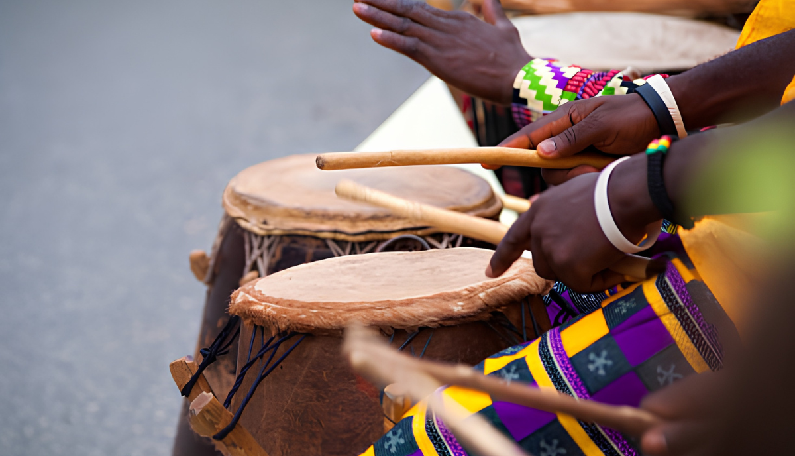
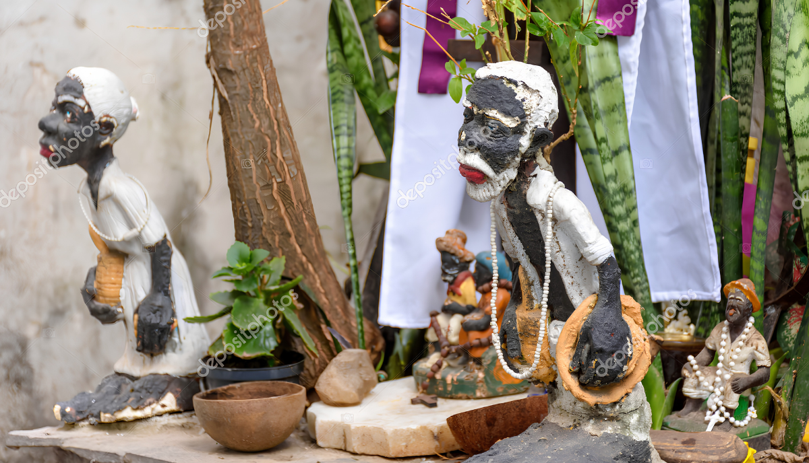
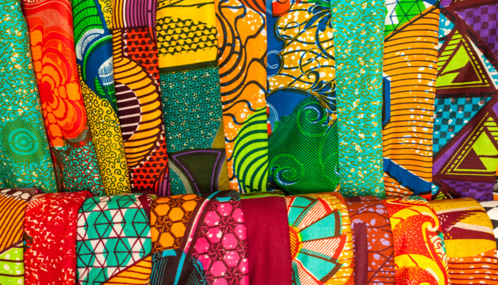

África é o terceiro maior continente em extensão territorial. O território estende-se por mais de 30 milhões de km², ocupando, aproximadamente, 20% da área continental da Terra. No continente vive mais de um bilhão de habitantes, fazendo dele o segundo mais populoso, sendo dividido por África Central, África Meridional, África Setentrional, África Ocidental e África Oriental.
A África possuí uma imensa diversidade cultural que acabam
não sendo
comentadas vindo de preconceitos e estereótipos que acabam se tornando comuns.
E aqui iremos falar curiosidades e sua importância cultural e tirar esse estereótipo ruim,
então segue o restante do texto!!



